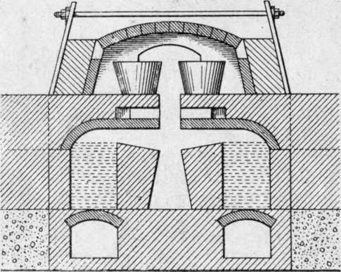
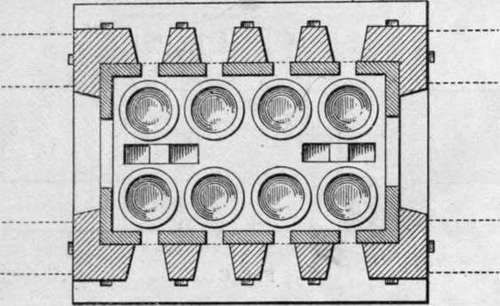
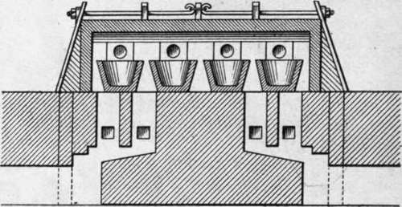
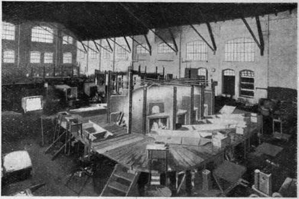
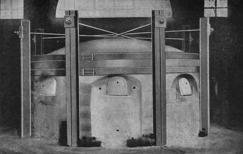

Glass House Furnaces. Part 2
Description
This section is from the book "Glass And Glass Manufacture", by Percival Marson. Also available from Amazon: Glass and Glass Manufacture.
Glass House Furnaces. Part 2
In the old type of English furnace containing twelve pots, each 38 in. diameter and holding about 15 cwts. of metal, the furnace would be capable of melting 7 to 8 tons of glass a week, taking 40 tons of best fuel. The more up-to-date glass-melting furnaces are constructed upon a much better principle than the coal-fired old English type of furnace just described. These are usually producer gas-fired and give more economy and greater convenience in every way.
In these better types of modern furnaces some form of regeneration or recuperation of the waste heat is usually adopted. These furnaces are much smaller and more compact; being gas-fired, they give much higher temperatures, more complete combustion of the fuel, greater ease in regulation, cleaner conditions, and far greater production than the older types of English furnaces. Considering the reasonable initial cost that the latest types of these modern furnaces can be built for, it appears incredible that so many of the old out-of-date English furnaces still remain in use in this country.
Cross Section. Fig. A - Siemens Siegbert Type Of Regenerative Glass-Melting Furnace
As examples of the types of regenerative and recuperative furnaces, a description will be given of the Siemens Siegbert Gas-fired Regenerative Furnace and the Hermansen Recuperative Furnace for glass-melting, which are extensively used on the Continent and are giving remarkably good results.
In the Siemens Siegbert type, the furnace may be a rectangular or an oval-shaped chamber, approximately 18 ft. by 9 ft., the crown of which is about 4 ft. 6 in. high. No outer cone-shaped dome exists, and the pots within the chamber are arranged much closer together and practically touching each other round the furnace. The furnace chamber is heated by a mixture of producer gas and heated air, the gas being generated in an independent gas producer situated outside the glass house and some little distance away from the furnace. At either end of the furnace, beneath the floor of the siege, are two blocks of regenerators. These are deep rectangular chambers containing an open lateral arrangement of fire-brick chequers, through which the air or products of combustion pass on their way to or from the furnace. Port-holes are situated directly above these regenerators which lead the gases through the floor or siege into the furnace chamber. The draught is induced by a tall stack, which draws the gas from the gas producers through a duplicate arrangement of flues to the port-holes at one end of the furnace, where it is mixed with the air which has been drawn and heated in its passage through the regenerator beneath.
Sectional Plan. Fig. B - Siemens Siegbert Type Of Regenerative Glass-Melting Furnace
Sectional Elevation. Fig. C - Siemens Siegbert Type Of Regenerative Glass-Melting Furnace
This gaseous mixture, whilst in combustion, is drawn across the furnace chamber to the other end of the furnace. The flames playing across the tops of the pots on either side pass down through the port-holes and regenerator at the opposite end. The hot gases or products of combustion, in passing through the lateral channels of this regenerator, leave behind their heat by the absorptive or conductive capacity of the fire-brick chequers through which the hot gases have passed on their way to the stack. The direction of the current is reversed at intervals of half an hour or less by using an arrangement of valves situated in the gas and air flues, so that the currents are made to travel in the contrary direction, the air necessary for combustion then being drawn through the hot block of regenerators which was previously heated by the exit gases. On its way through these lateral channels the air becomes intensely heated, and, when it is admixed with the coal gas at the porthole, this pre-heated air accelerates the combustion and calorific intensity of the gaseous mixture. The direction of the current is continually being reversed at the interval of half an hour or less by the manipulation of the valves, so long as the high temperature is desired.
In practice, however, the regenerators are only used whilst the batch materials are being melted during the night, and by morning, when the metal is melted and " plain," the heat is brought back, or retarded, by using the gas from the gas producers and cool atmospheric air under natural draught, instead of the regenerated hot air. This cooler mixture, naturally not being so active in combustion, maintains just sufficient temperature for working the metal out during the day. Later in the day, when the pots are emptied and refilled with batch, the regenerators are re-connected and the founding proceeds again through the night, and the metal is again got ready for the workmen coming in next morning.
It will be seen that this method of melting and working out the metal does away with night work, the furnace man alone remaining in charge during the night. All firing is done outside the glass furnace room, which is well lighted, clean, and free from coal dust, totally different conditions from those existing in many English glass houses of to-day.
A Siemens Siegbert furnace taking ten open crucible pots, and filled each day, turns out 15 to 18 tons of metal a week. The crucibles are about 30 in. in diameter and have a capacity of 5½cwts. of metal each. The amount of fuel consumed is about 18 tons a week. This type of furnace costs about £1,600 to £2,000 to build. In the writer's opinion, a disadvantage of this furnace is that, during the reversing in the direction of the fire gases, the greatest heat is suddenly brought to bear on the cooler pots, resulting in short life for the pots. The temperature of the incoming air is not so constant as with the recuperative type of furnace; however, with proper control, these defects may be obviated to some extent.
A Modern Glass House
The Hermansen Continuous Recuperative Glass-melting Furnace in foreground (Twelve Covered Pot Type).
By the kindness of Messrs. Hermansen, the patentees, I am permitted to illustrate their Recuperative Glass-melting Furnace, eight pot type.
Hermansen Glass House Furnace (Eight Pot Type)
Continue to:
Tags
glass, manufacturing technology, furnace, glassware, wine glass